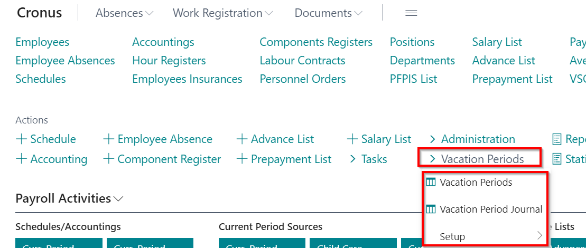
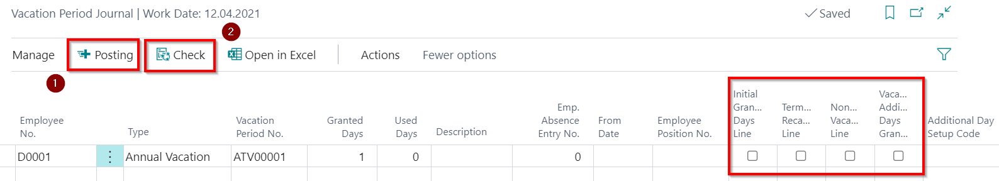

Vacation management
Vacation period setup
Vacation setup ( Role Center - Vacation Periods - Setup - Vacation Period Setup) consist of following fields:

| Field Name | Description |
|---|---|
| Enable Vacation Management | Enable if using vacation management. |
| Vacation Period Length | Specifies the length of the vacation period |
| Vacation Day Type | Calendar Day or Working Day. |
| Vacation Days per one Period | Indicates the number of days to be assigned per single period. |
| Planned Work Days | Indicates the number of days to be assigned per single period. |
| Planned Work Days 6DDN | Indicates the number of days to be assigned per single period for 6 day work week calendar. |
| Manage Extra Vacation | Enable if you need to maintain additional vacation days. |
| Day Rounding Precision | Indicate accuracy (decimal places), with what remaining vacation days / hours will be used in calculations. |
| Vacation Period Nos. | Indicates a vacation period number series. |
Vacation Period Add. Day Setup
Vacation period additional day setup (Role Center - Vacation Periods - Setup - Vacation Period Add. Day Setup) includes following fields (For each occasions should be created separate setup card):

| Field Name | Description |
|---|---|
| Code | Free selected code name. |
| Description | Freely selected title. |
| Minimal Relative Count | Specify the number. |
| Maximal Relative Age | Specify the number, including this value in the required age interval. |
| Additional Day Count | Indicate how many days should be allocated for a single period. |
| Priority | In case if a number of few conditions will occur, the highest priority will be taken. |
| Only Disabled Relative | Enables, if add. vacation type refers to relatives with disabilities. |
| Relative Filter | Data will be processed only with the specified code. |
| Absence Code | Additional days accounting will be processed absences only with the specified code. |
The solution is intended for automatic allocation for additional vacation days (for children).
In case the settings are not filled, the automatic day allocation will not happen.
Allocating the Add. vacation days
The rows in employee card's function Relatives are entered. By entering a new record, system checks if stated relative code coincides with a relative code in Vacation Period Add. Vacation Day Setup. In case the code coincides, the recalculation of additional days is offered.
Also at Relatives register is available field Disabled Person, who influences the number of days allocated for the number of add. vacation days.
In the field Age, the system automatically calculates age to today ( This is the date of the server instead of the work date) guided from the value entered in field Birth date.
The system, based on Relatives' data, allocated additional vacation days. It is assumed that if there was at lease 1 day worked at the limits of the vacation period, then this entitles employee for the additional children days. In case if the conditions affecting the number of additional vacation days changes in a one vacation period (for example, the child has reached a certain age), then system calculates the days at the beginning and at the end of the period and assigns the highest number of days.
Also there is a chance to assign day manually using Vacation Period Journal (Role Center - Vacation Periods - Vacation Period Journal). For such purpose, a new field is created in the journal Additional Day Setup Code. This field should only be completed if additional days for children are adjusted.

There is a possibility to run the recalculation of the number of belonging add. vacation days  from the vacation period register Vacation Periods (Role Center - Vacation Periods - Vacation Periods):
from the vacation period register Vacation Periods (Role Center - Vacation Periods - Vacation Periods):

Using a standard feature Generate Periods  , the system will also assign additional days for children.
, the system will also assign additional days for children.
When you enter the absence, the system performs the recalculation of the balance. Ja tabulā Atvaļ. periodu papilddienu uzstādījumi nav ierakstu ar lauka Prombūtnes kods vērtību, kura sakrīt ar lauku Prombūtnes kods darbinieka prombūtnes kartiņā, tad pārrēķins nenotiek.
Lai nodrošinātu dienu par bērniem nedalīšanu proporcionāli, tām prombūtnēm, kurām laukā Ietekme uz atvaļinājumu vienādu ar Samazina atvaļinājuma periodu , pirms pieejamo papildatvaļinājumu dienu aprēķina, tiek uzlikts filtrs Papilddienu uzstādījuma koda filtrs tabulai Atvaļinājuma periods uz tukšumu. Kā arī netiks pārbaudīts, ka papildatvaļinājums par bērniem paliek negatīvs, respektīvi, ja tas tika izmantots, tad nebūs kļūdas paziņojums par dienu nepietiekamību.
Dienu attiecināšana pa periodiem: papildināta funkcionalitāte, lai varētu piešķirt papildatvaļinājuma dienas par bērniem vai citas papildatvaļinājuma dienas. Tiek pārbaudīts vai tagad tiek apstrādāts papildatvaļinājums, tad tiek pārbaudīts vai tabulā Atvaļ. periodu papilddienu uzstādījumi pastāv ieraksts ar tādu Prombūtnes kods, kā šim ierakstam. Ja ir, tad tiks uzlikts filtrs uz lauku Papilddienu uzstādījuma koda filtrs tabulai Atvaļinājuma periodi, kur nav tukšs, pretējā gadījumā, tas tiks uzlikts tieši tukšs, lai aprēķinātu korekti pieejamas papildatvaļinājuma dienas – atbilstoši bērnu papilddienas vai citas. Ja tas būs par bērniem, tad tiks aizpildīts lauks Papilddienu uzstādījuma kods ar pirmo atrasto tabulā Atvaļ. periodu papilddienu uzstādījumi. Pārējā loģika paliek, ka bija standarta – mēģinās piešķirt dienas pa visiem iespējamiem periodiem.
Gadījumā, ja papildatvaļinājums tika piešķirts un izmantots par nākamajiem periodiem, tad atlaižot darbinieku, sistēma noslēgs tekošo atvaļinājuma periodu, pārējie tiks dzēsti.
Atvaļinājuma periodi
Lomu centrs - Atvaļinājumu periodi - Atvaļinājumu periodi.

Atvaļinājuma periodos iespējams iegūt informāciju par darbiniekam piešķirtajām, izmantotajām, pieejamajām ikgadējā/papildatvaļinājuma dienām, kā arī, uz kādiem darba periodiem tās attiecas. Lai izveidotu jaunus atvaļinājuma periodus, jāizvēlas Ģenerēt periodus

Atvaļinājuma periodu žurnāls
Lomu centrs - Atvaļinājumu periodi - Atvaļinājuma periodu žurnāls
Atvaļinājuma periodu žurnālā iespējams ievadīt/koriģēt datus par piešķirto/izmantoto atvaļinājuma/papildatvaļinājuma dienu skaitu.
Kad nepieciešamā informācija atvaļinājuma periodu žurnālā ir ievadīta, to iespējams Pārbaudīt un pēc tam Grāmatot . Pēc grāmatošanas iegrāmatotā informācija atspoguļojas Atvaļinājumu periodi.

| Field Name | Description |
|---|---|
| Sākotnējā piešķ. dienu rinda | Izmanto gadījumos, kad ir nepieciešamība koriģēt perioda piešķirto dienu skaitu. Tiks ņemts vērā pie perioda samazināšanas un pie atlikušo dienu aprēķina perioda vidū. |
| Atlaišanas pārrēķina rinda | Izmanto gadījumos, kad ir nepieciešamība koriģēt dienu skaitu, kas aprēķināts pie darbinieka atbrīvošanas pēdējā atvaļinājuma periodā. |
| Bezalgas atvaļinājuma rinda | Izmanto gadījumos, kad ir nepieciešamība veikt piešķirto atvaļinājuma dienu skaita samazinājuma korekciju saistībā ar bezalgas atvaļinājumu. Darba likums paredz, ka laikā, kas dod tiesības uz ikgadējo apmaksāto atvaļinājumu, neieskaita atvaļinājuma laiku bez darba samaksas saglabāšanas, kas ir ilgāks par četrām nedēļām viena gada laikā. |
| Atvaļinājuma atsevišķu dienu piešķiršana | Izmanto gadījumos, kad ir nepieciešams piešķirt papildu dienu no kāda konkrēta datuma. Diena netiek sadalīta proporcionāli atvaļinājuma periodam, stājas spēkā uzreiz. |
Jāpievērš uzmanība, ka gadījumos, kad atvaļinājumu dienas uzskaite ir kalendārās dienās, tad piešķirot papildatvaļinājuma dienu, sistēma uzkrājumos ņems vērā ka piešķirta diena ir darba diena, nevis kalendārā diena.